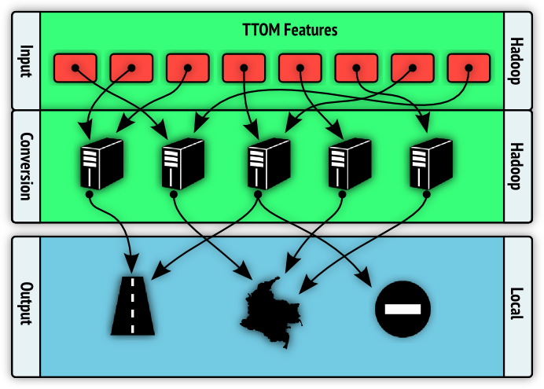
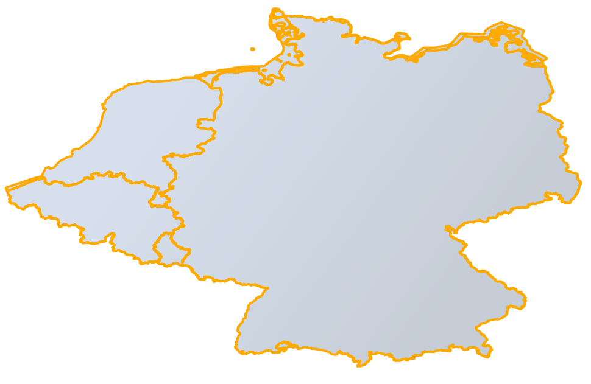
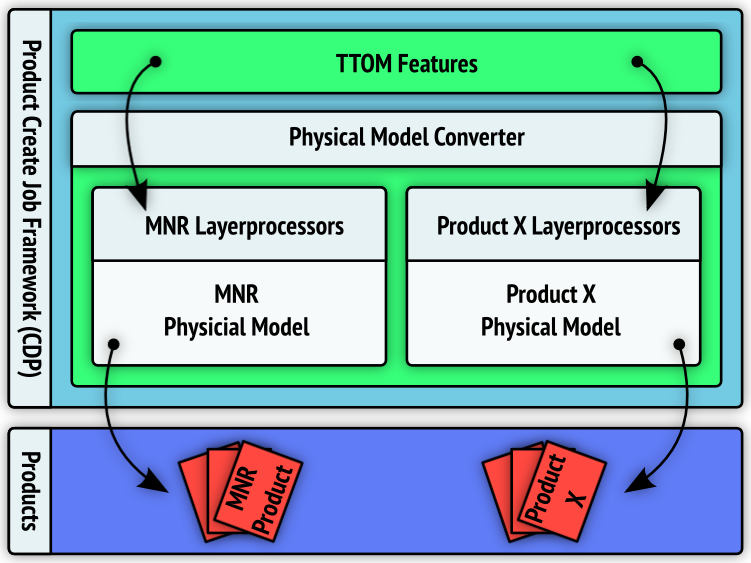
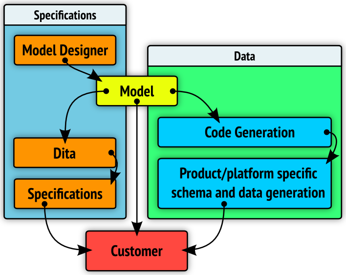
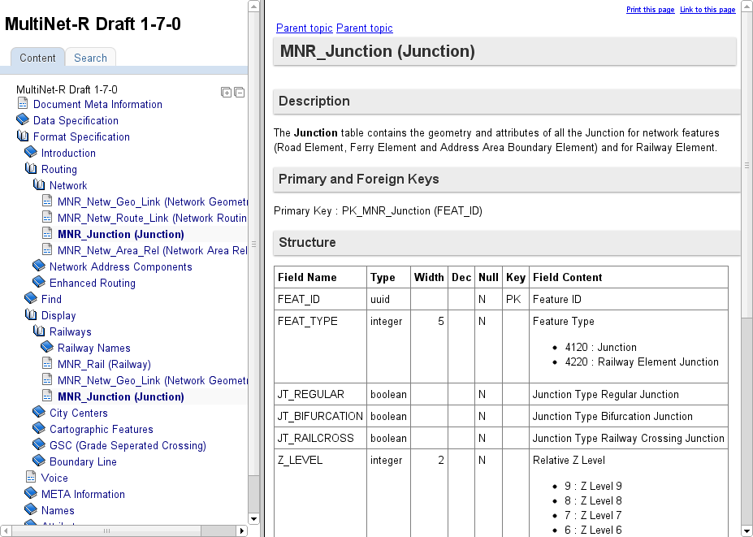
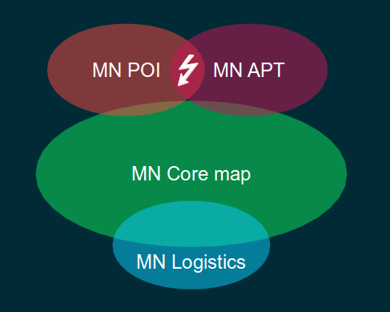
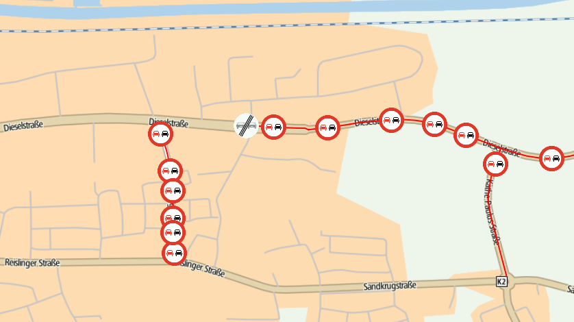
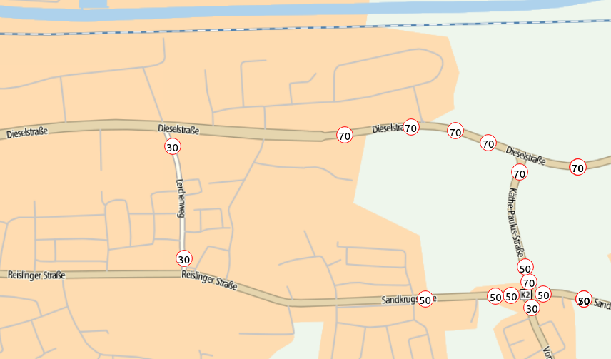
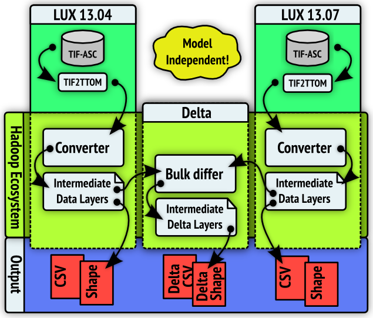
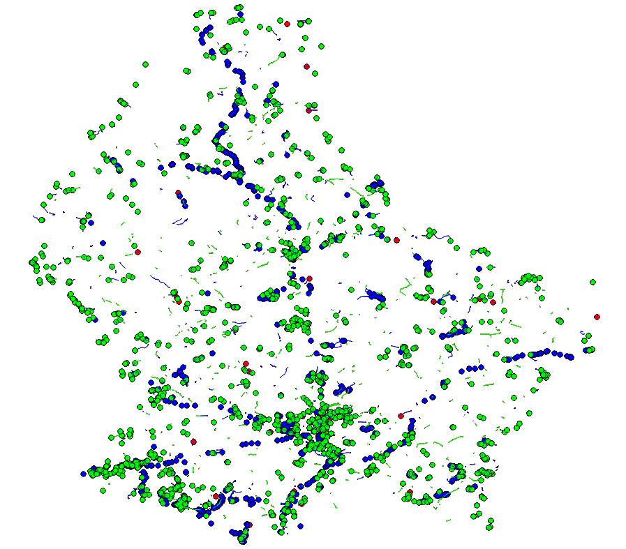

Our customers:
Your MultiNet Suite is far too complex. It’s an assembly kit that takes too much time and effort to compile.
Can you optimize your delivery for a direct load into my RDBMS?
I need frequent fresh map updates that are straightforward to integrate.
Where is the map updated and what remained stable?
MultiNet-R
- 1 integrated relational model for all content layers
- Seamed continental layers
- Integrated meta-information
- RDBMS loadable format with loaders
- Machine readable specification
- Frequent map builds with delta records
- Stable feature IDs
Current Multinet-R customers


Core design principles
- API driven: built on top of CDP
- Scalability: optimized for continental, batch processing
- Model driven: type safety to ensure data quality
API driven

API driven - advantages
- Keep close with CPP/CDP development
- Black-box TTOM features access
- No code changes needed to use snapshot mechanism
Scalability
"Bring the code to the data"
- Using CDP infrastructure via Product-Create-Job
- Converter runs on a cluster of machines
- Built with proven opensource technologies
- Free vs. TIF2MN Oracle setup for 1,408,000 USD


Scalability - Distributed conversion
- Converter is a collection of
LayerProcessors - Input data is split into equal parts
- Each part is processed on its own machine, in parallel
Scalability - Distributed conversion
Scalability - Some numbers
End-to-end conversion of BENELUXDEU
- 74,000,000 TTOM features input (= 70GB)
- 190,678,532 MNR features output (= 18GB)
- Normalized 85,618,965 features in 23 minutes
- Full conversion in about 11 hours
Scalability - Advantages
- More machines equals proportionally more performance
- Ability to make product faster
- Enforces us to write pure* conversions, so easier to:
- Unit-test
- Debug & troubleshoot
- Understand & modify
- Requires that TTOM resembles Multinet-R (and viceversa)
* The conversion always gives the same result value given the same input, no inner state
Model driven
- Multinet-R is defined as a physical model
- Converter itself is model agnostic
- Can contain multiple physical model converters
- More details on the physical model later
Model driven - Pluggable converter
Multinet-R architecture - conclusions
The first nextgen converter leverages CDP components to realise a future proof conversion process that improves on earlier developments and also provides foundations for future product converters.
Scalability is possible by having a TTOM model which is close to the Multinet-R model, allowing for straightforward data transformations.
Why?
For Multinet, we use config files to define and generate output product formats. This process ran into a frequent problem:
- Updating config is a manual process, based on reading specs docs
- No clear overview on specification changes
- Delivered products in line with our config, but not with the specifications
- Only detected when we receive external non-conformities
Solution
We devised a new way to deal with product - specifications linking, commonly known as "Machine Readable Specs".
- Specifications and product generated from the same model/config
- Model acts as "the single source of thruth"
Goal is to make it next to impossible for us to have a discrepancy between specifications and product delivered to customer.
And more...
Using this base idea, we were also able to realize other goals:
- Code generated based on specification
- Machine readable specifications to customers
- Model independent from output format
- Independent of product (not Multinet-R specific)
- Constraints definition
- Specifications change control
How?
In detail: The model
Content
A physical model defines tables with fields, primary, foreign and uniqueness constraints, and constraints on fields:
- Clear datatype definition
- Can be enumeration
- Can be range constrained
- Null allowed or not
The specifications documentation on tables and fields are contained in the model.
In detail: The model
Format
- Model is defined as an xml file
- Has an xsd schema defined
- Ordered and diffable
- Delivered to customers
In detail: The model
What it looks like
<table alias="Junction" description="..." name="MNR_Junction">
<field name="FEAT_ID" nullable="false">
<uuid/>
<alias>Feature ID</alias>
</field>
<field name="FEAT_TYPE" nullable="false">
<enum enumname="Feature Type Junction"/>
<alias>Feature Type</alias>
</field>
...
<primarykey name="PK_MNR_Junction">
<field name="FEAT_ID"/>
</primarykey>
<foreignkeys/>
<uniquenesses/>
</table>In detail: EA to Model
Modeltools
When we want a new model.xml from EA, we use Modeltools:
- Has been adapted to support creation of model.xml
- Also creates DITA files from the generated xml
- DITA files are used to generate the specifications for the customer
- Work on modeltools completed, modeltools ownership now transferred to QA team
DITA
What it looks like
In detail: Model to code
Code generation
We generate java code classes representing the model.
- Serialisation through AVRO
- Specs documentation in code
- Validation functionality
- Equality functions
- Model driven integration test support
- Safety mechanism: can't write if not valid
In detail: Model to code
What it looks like
/**
* Field FEAT_TYPE.
*
* @return the Feature Type
*/
public FeatureTypeJunction getFeatType() {
return featType;
}
/**
* Field FEAT_TYPE.
*
* @param featType Feature Type
*/
public void setFeatType(FeatureTypeJunction featType) {
this.featType = featType;
}In detail: Generation of relational schemas
We use the model to create schemas for different databases, currently Postgres, Sql/spatialite and Shape.
Since our model is non-platform specific:
- We are able to use the capabilities of each platform as much as we can (geometry types, field constraints, etc)
- We are able to support new platforms with minimal effort
In detail: Generation of relational schemas
What it looks like
/* Table 60 : MNR_Junction */
DROP TABLE IF EXISTS "MNR_Junction";
CREATE TABLE "MNR_Junction" (
"FEAT_ID" text NOT NULL,
"FEAT_TYPE" integer NOT NULL,
"JT_REGULAR" integer NOT NULL,
"JT_BIFURCATION" integer NOT NULL,
"JT_RAILCROSS" integer NOT NULL,
"Z_LEVEL" integer NOT NULL,
"GEOM_WKT" text NOT NULL
, PRIMARY KEY (FEAT_ID));Current state of Machine-readable specs
Main grunt work has been done. All components in place. Future work consist mainly of marginal enhancements and maintenance. This is one part of the Multinet-R project that can more or less be considered completed.
Conclusion
Having a single source of thruth is a good thing. Using a "smart" model throughout your framework saves you time, improves the quality of the output, and increases your options in dealing with changing requirements.
Current state: MultiNet
Split, overlapping & inconsistently modelled content

Geographical split
- 'MN Europe' = collection of 130 datasets
- Datasets borders cause features to be split or duplicated
- Different mechanisms to overcome dataset border limitations

MN-R goals
- A consistent product model to improve ease of use and increase development speed
- Data integration (from content + geographical point of view) to optimize operational data intake process
MN-R seamed continental layer demo
MN-R realisations
- Monthly prototype release cycle since start of 2013
- MN-R content quickly follows TTOM content
- Level 1 road network (junctions and network elements)
- Level 2 road network (roads, intersections, freeway intersections)
- Maneuvers, restrictions and lanes
- City centers, water, hierarchical index
- New TTOM name model integrated
- Seaming is already on a better level than MultiNet
- Machine readable specifications
- Incremental record updates
MN-R remaining challenges
- Keep TTOM and MN-R in line
- TTOM dependency
- for data freshness
- for data integration
- phonemes
- locality index
- address points and POI's
- ...
traffic signs, overtaking restrictions
- Volkswagen asks for extra map content
- Traffic signs
- Overtaking restrictions
- Overtaking lanes
- Prototype data has been quickly captured, integrated in TIF, TTOM and MN-R software stacks
- All content is fully integrated in MN-R map
- Official prototype data delivery expected Wednesday, 10th July
Overtaking restrictions
with start/end traffic signs
speed signs
Current state: MultiNet
- Quarterly product releases
- What has exactly been updated in a new release is not transparent
- OpenLR based MN incremental updates
- Subset of Cartopia transactions (=filtered)
- Supports limited set of features/attributes and no geometry updates
- Not a 100% guaranteed solution
- Hard to apply for customers (street name update impacts core map, MN POI, MN APT, locality index, ...)
MN-R goal state
- monthly baseline releases (full product)
- full update transparency with stable id's for all content
- delta records
- Easily applicable
- Id based
- Added/removed/updated record lists
- For all content
- OpenLR based MN incremental updates remain applicable
Baseline A + Delta(A,B) = Baseline B
Delta records: how?
Delta records: demo
Delta records: noise

Delta records: challenges
- more frequent quality input data
- stable id's for all content to remove noise in delta records
++6 months
- Prototype feature DNA as enabler for stable ID
- Prototype product partitioning
- Conversion performance and operational process
- Knowledge sharing and coop with Mapline teams (MN and automotive)
- Deliver full pilot end Q4 2013
Any questions?
This overview was brought to you by the Pandora team: Rebekka, Jan, Jelle, Plamen, Kevin, Christophe, Dominique, Pieter and Timo.
This presentation is available online on cats at http://cats.ttg.global/sprint-reviews/pandora/mnr-demo-1. (css3 capable browser required)
Powered by reveal.js.